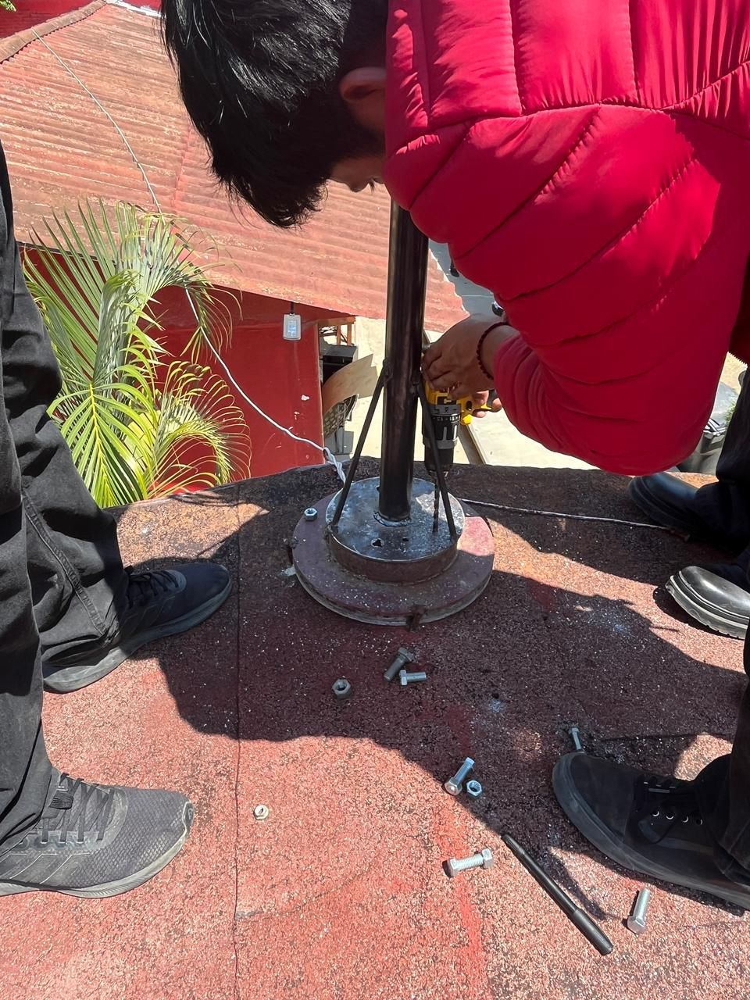

En Eolix, asumimos la responsabilidad de contribuir activamente al bienestar social y al cuidado del medio ambiente, mediante el desarrollo e implementación de soluciones energéticas limpias, accesibles y sostenibles. Nuestro compromiso se basa en promover el uso de energías renovables, especialmente la energía eólica de baja potencia, como una alternativa viable para reducir la dependencia de fuentes contaminantes. Trabajamos con un enfoque responsable que busca minimizar el impacto ambiental, optimizando el aprovechamiento de los recursos naturales y fomentando prácticas que reduzcan la huella ecológica. Asimismo, impulsamos la educación y concientización en la comunidad sobre la importancia de adoptar tecnologías limpias, incentivando una cultura de respeto y cuidado hacia el entorno. En el ámbito social, buscamos generar un impacto positivo al facilitar el acceso a soluciones energéticas en sectores de bajo consumo, contribuyendo al desarrollo local y mejorando la calidad de vida de las personas. Promovemos valores como la responsabilidad, la ética y el compromiso comunitario, integrando estos principios en cada uno de nuestros proyectos. De esta manera, en Eolix no solo buscamos ofrecer un servicio, sino también ser agentes de cambio que impulsen un futuro más sostenible, equilibrado y responsable con las generaciones presentes y futuras.
